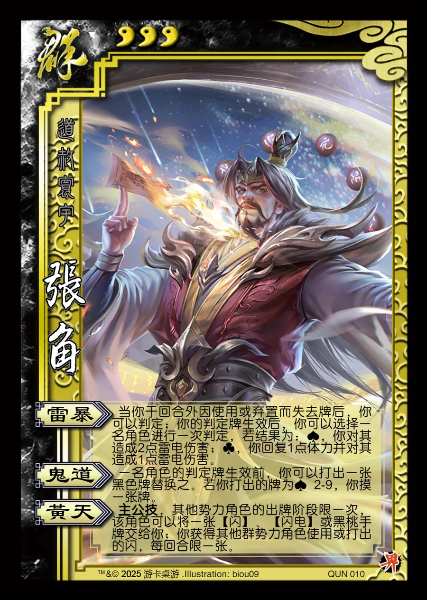

点击卡面查看大图
群
界张角
♥3道赦寰宇
雷暴
当你于回合外因使用或弃置而失去牌后，你可以判定；你的判定牌生效后，你可以选择一名角色进行一次判定，若结果为：♠️，你对其造成2点雷电伤害；♣️，你回复1点体力并对其造成1点雷电伤害。
鬼道
一名角色的判定牌生效前，你可以打出一张黑色牌替换之。若你打出的牌为♠️ 2-9，你摸一张牌。
黄天主公技
主公技，其他势力角色的出牌阶段限一次，该角色可以将一张【闪】、【闪电】或黑桃手牌交给你；你获得其他群势力角色使用或打出的闪，每回合限一张。